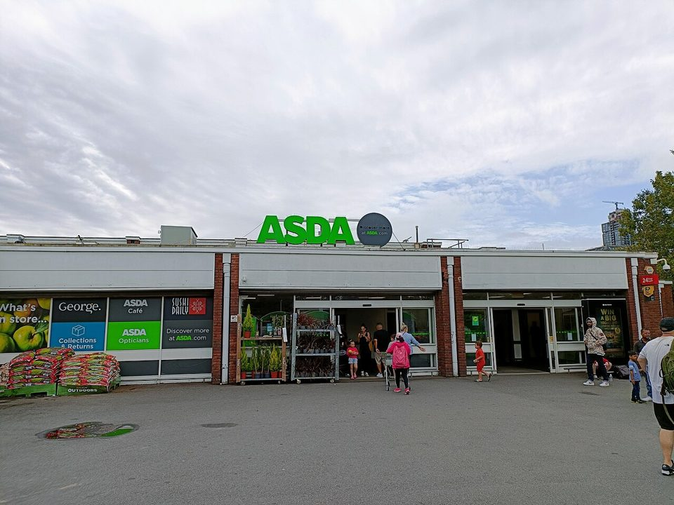
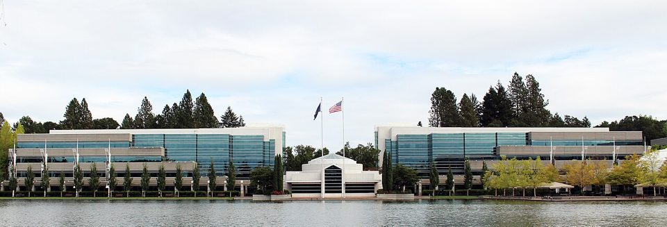

Chapter 8 · Enterprise Systems
Enterprise Systems: How Nike Spent $400 Million to Make the Wrong Shoes
Nike set out to replace twenty-seven ordering systems with one, so that every part of the company would finally read the same numbers. The first piece it switched on, a $10 million forecasting program, ordered thousands of the wrong shoes. The rest of the project went slowly, carefully, and well. This chapter is about what an enterprise system asks of a company, and why the same company can fail at it and succeed at it in the same few years.
Wanna go analog?or save it as a PDF; the navigation drops out
On the conference call where Nike warned investors that its quarterly earnings would fall short, chairman Phil Knight summed up the company's new supply chain software: "This is what you get for $400 million, huh?"1 What Nike got was too many of one sneaker, the Air Garnett, and too few Air Jordans.1
By the end of this chapter you should be able to:
- Explain what an enterprise system is and why it gives a company one version of the truth.
- Explain what master data is, and why it has to be cleaned and matched before a new system goes live.
- Distinguish configuration from customization, and explain why customization costs money at every upgrade.
- Compare rollout strategies (big bang, phased, parallel, pilot) and say what each one risks.
- Trace a failed rollout to the component that actually broke, using the two mini-cases and Nike.
- Name who pays for a failed rollout, and what change management is for.
1What enterprise systems are
Imagine you order a jacket online. The website says it is in stock. Two days later you get an email: sorry, it is not. Somewhere in that company, the website and the warehouse kept separate records, and nobody made them agree. That small annoyance is the problem this chapter is about, at the size of a whole company.
Chapter 7 argued that the shape you store facts in decides which questions are cheap to ask. This chapter is about the biggest version of that decision a company ever makes: whether every department keeps its own records, or the whole company runs on one set.
1.1 Information silos: the problem
As a company grows, each department buys or builds the system that suits it. Sales picks one, the warehouse picks another, and finance has its own. Each system works fine on its own. The trouble is between them, because each one keeps its own copy of the facts, and the copies drift apart. A system like this is called an information silo, after the tall farm towers that each store one crop and do not connect to each other. Here is what silos look like in practice:
- One customer, two addresses. For example, a customer moves and updates her address on the website. The billing system never hears about it, so her invoices keep going to the old one.
- One product, two prices. For example, marketing puts a jacket on sale. The store system still has the old price, so the register charges more than the ad says.
- Stock that exists on one screen and not another. For example, the website's copy of the inventory was updated last night and shows three jackets. The warehouse sold the last one this morning.
A large global company can end up with dozens of separate ordering systems, none of which fully agrees with the others. Every decision made from one of them is made from a copy that might be wrong.
1.2 Enterprise systems: ERP, CRM, and SCM
An enterprise system is software that runs a company's core operations on one shared database. A sale, a purchase, and a paycheck become facts in one place instead of copies in twenty. Change a customer's address once, and every department sees the new one. People call this having one version of the truth. There are three main families, and most large companies run all three:
- ERP (enterprise resource planning) is the core. It handles finance, inventory, orders, manufacturing, and HR. For example, when a store sells a jacket, the ERP lowers the inventory count, records the revenue, and can trigger a reorder. SAP and Oracle are the biggest vendors.
- CRM (customer relationship management) holds everything about customers. For example, a sales rep can see every past order and every support call before phoning a client. Salesforce is the best-known vendor.
- SCM (supply chain management) plans the flow of goods from suppliers to shelves. For example, it forecasts how many jackets each region will need next season and when to order them from the factory.
Here is the one sentence to take from this section. An enterprise system is a data decision wearing a software costume. The software is what gets bought. What it actually does is force one structure onto records that used to live in many places. That means the people component carries most of the cost, because every department that had its own way of recording a customer, an order, or a price now has to record it the system's way.
1.3 Master data: the records everything else depends on
Some records matter more than others. Master data is the set of reference facts that every other record points to: the lists of products, customers, suppliers, stores, and prices. One sale is a small fact. The product it refers to is master data, and every sale, shipment, and invoice for that product depends on it.
That makes master data the most dangerous thing to get wrong. For example, if one product code points to the wrong size, every order for that product ships the wrong size, in every department, at once. In a world of silos, a bad record hurts one department. In an enterprise system, it reaches everyone.
Before a company switches on an enterprise system, it has to move its master data out of the old systems, called legacy systems, and into the new one. It also has to make the old copies agree with each other first. This step is called data migration, and it is usually slower and harder than anyone budgets for. You will see why in both mini-cases.
2Why they are hard to install
Buying an enterprise system takes an afternoon. Installing one takes years, and most of the reasons have nothing to do with technology. Three decisions explain most of the trouble. If you end up on an ERP project, and many of you will, these are what the meetings will be about.
2.1 Configuration versus customization
An enterprise system comes with thousands of settings the vendor built in. Configuration means choosing among those settings. For example, you set the fiscal year to start in July, or pick which currencies the company uses. Customization means changing the vendor's code so the software does something it was not built to do. For example, you rewrite the order screen so it matches the paper form your sales team has used for twenty years.
Customization feels reasonable at the time. The cost shows up later. Every time the vendor releases an upgrade or a security fix, somebody has to check that your changes still work, and often redo them. Configuration is paid for once. Customization is paid for at every upgrade, for as long as you run the system.
Five things a company might do while installing an enterprise system. Decide which each one is before you check.
If the vendor built a setting for it, it is configuration. If somebody has to write or change code to make it happen, it is customization, and it will need to be done again at every upgrade.
2.2 Process fit
Every enterprise system has a built-in idea of how ordering, billing, and shipping should work. Process fit is how closely that idea matches the way your company actually works. When the fit is poor, you have two choices:
- Change the process to match the software. For example, the warehouse drops its own paper sign-off and uses the system's approval step instead. This is hard on people, but only once.
- Change the software to match the process. That is customization, with the cost that comes back at every upgrade.
Both are expensive. Only one is expensive forever. This is why choosing an enterprise system is really a decision about how the company will work, not just about which software to buy.
2.3 Rollout strategies
The last decision is how to switch the new system on. The moment it goes into real use is called go-live. You met these strategies in Chapter 5, and enterprise systems raise the stakes, because the system being replaced is the one running the company right now. A failed website launch loses some signups. A failed ERP switch can mean a company cannot ship, bill, or plan.
- Big bang: everyone switches on the same day. Chapter 5 called this a direct cutover. For example, every store and warehouse moves to the new system over one weekend. It is fast and simple to plan, and if it fails, it fails everywhere at once.
- Phased: one region, plant, or department moves at a time. For example, the company moves its smallest country first and learns from it before the big ones. It is slower, and each phase is cheaper to fix.
- Parallel: the old and new systems run side by side for a while, and people check that they agree. It is the safest choice and the most work, because everyone does everything twice.
- Pilot: one small site uses the system first as a test. For example, a single warehouse runs it for a month before anyone else does.
Big bang keeps tempting companies because running two systems costs money every month. Nike's own story, in section 4, shows what the slower choices buy.
3Two companies, two refusals
Before the main case, here are two companies that installed this kind of system and were badly hurt by it. An enterprise system makes three demands of the company that buys it:
- Be honest about scale. Prove the system can carry your real volume before you depend on it.
- Know what your records contain. Clean and match your master data before you move it.
- Change yourself, not the software. Fit your process to the system wherever you can.
Each mini-case refused one of the first two. Read them with Nike in mind, because Nike's first project refused all three, and its second one met them.
3.1 Mini-case 1 · 1993 to 1998: the distributor that could not carry its own volume
Picture pharmacies calling a distributor to ask where their medicines are, and the distributor's computers cannot say. FoxMeyer was a drug wholesaler with about $5 billion a year in sales, moving medicines from manufacturers to pharmacies and hospitals. In 1993 it bought SAP's R/3, an ERP system, to run all of its warehouses on one system, and hired Andersen Consulting to install it.2
It did not go as planned. FoxMeyer's bankruptcy trustee later claimed that SAP told the company in 1994 that the system could process invoices at only 6 of its 23 warehouses, because it could not keep up with the volume of a high-volume distribution business.2 FoxMeyer filed for bankruptcy in 1996 and was liquidated. In 1998 the trustee sued both SAP and Andersen for $500 million each. Andersen called the claim preposterous, and SAP fought it.2 You do not need to settle who was to blame to see the lesson.
The demand it refused: be honest about scale. The component: hardware and software. Nobody proved, before the company depended on it, that the new system could carry the volume the old one was already carrying.
Show the answer
First, the requirements phase: somebody has to write down the volume the system must handle, in numbers, such as orders per hour across all 23 warehouses. Chapter 5's point applies here: a requirement nobody writes down can never be tested. Second, the testing phase: a load test run at that real volume, before the company depends on the system. A result showing the system could only keep up at some of the warehouses, which is what the trustee later said SAP reported in 1994, was the signal to stop or renegotiate. The general rule: when a purchase depends on a number the seller supplied, the buyer tests the number.
3.2 Mini-case 2 · 2021 to 2026: eleven million items that did not match
In 2021 a British supermarket chain was told, in effect, that the systems it ran on belonged to someone else and it had a few years to move out. Walmart had sold Asda and agreed to keep running its computer systems while Asda built its own. Chapter 7 described what those Walmart systems are. Asda had been living inside them.
The program was called Project Future. It meant separating more than 2,500 systems and rebuilding the company's core on SAP. The first budget was about £189 million. By the end of 2023 the cost had reached about £430 million.3

Photograph: Oxfordmale, via Wikimedia Commons, CC BY-SA 4.0.
In 2024, partway through the move, an internal incident report showed that Asda's new warehouse system and its new SAP system disagreed about how much stock the company held. The gap was about 10 million items in June and 11 million in July, worth around £21 million.4 Those two systems were supposed to be counting the same things. Asda told reporters it was a minor discrepancy in a report, quickly fixed, with no financial or operational impact.4 Either way, notice the job a report like that does: it finds, after the fact, the places where two databases disagree about what the company owns.
Cutover dates slipped. The last stores and depots moved in August 2025, and for months afterward shelves went short and the website was harder to use. In late 2025 the chairman called the problems self-inflicted and said they had set the company's turnaround back about six months. The 2025 accounts put the total cost at £1,224 million, including a final one-off cost of £284 million that year.3
The demand it refused: know what your records actually contain. The component: data. Asda moved in stages over several years, which is the careful way to roll out. It was still badly hurt, because a phased rollout protects you from a bad switch-on day. It does nothing about records that disagree.
Show the answer
The report was doing by hand what a shared database is supposed to make unnecessary: comparing two copies of the same fact and listing where they differ. Chapter 7 called this an update anomaly: one fact stored in two places, free to disagree. To stop it when it is written, the stock count would have to live in one place, with one system owning that fact and the other reading it instead of keeping its own copy. That is a decision about the data, and it has to be made before go-live, because afterwards every mismatch becomes a manual cleanup job for people.
3.3 What the two have in common
Two demands, two refusals, and each landed on a different component. FoxMeyer never proved its scale, which is hardware and software. Asda did not know what its records contained, which is data. In neither case was the main problem bad code.
Now look at all three demands together. Every one is about the organization, not the technology, and every one has to be met before the system is switched on. An enterprise system is unusual among purchases because you have to change in order to use it. That is why buying one is a decision about the company, and why the people who approve it will rarely log in to it.
Nike lets you see this clearly, because the same company did it both ways in the same few years. Its first project, a forecasting system, broke all three demands at once. Its second, the main ERP, met them.
4Main case · Nike: $400 million, huh?
Picture a Nike warehouse in the winter of 2001. One aisle is stacked to the ceiling with a sneaker nobody is buying. Two aisles over, the shelf for the shoe every store wants is empty, and the factory that makes it is across the Pacific, months away. Nobody in the building did anything wrong. To see how a company arrives at that aisle, and then how it recovered, follow the story in the order it happened.

Photograph: Coolcaesar, via Wikimedia Commons, CC BY-SA 4.0.
Four numbers frame the case:1
4.1 The problem: twenty-seven systems and a nine-month wait
By the late 1990s Nike was a global company running on systems it had outgrown. By 1998 it had 27 separate order management systems around the world, all heavily customized and poorly linked to headquarters in Beaverton.1 That is section 1.1's information silo problem, at global scale.
The silos had a real cost. Making a sneaker took about nine months from order to delivery, but retailers placed most of their orders only six months ahead. So Nike had to start making shoes three months before it knew what stores wanted, and hope it guessed right. If it could cut the cycle to six months, it could make shoes to order instead of making them on a guess.1 To do that, every region needed to read the same numbers.
4.2 The plan: one system for the whole company
Nike's plan, started in 1998, was to run its operations on one shared system. SAP's ERP would be the core. Siebel would handle customer tools. Software from a company called i2 Technologies would do the demand planning, forecasting what to make and turning the forecast into factory orders. The budget was about $400 million, later raised to $500 million.1
Nike also chose the hard version of the plan: a single instance, meaning one giant shared database for North America and Europe, instead of a separate copy for each region. That meant getting every region to agree on business practices and data definitions before the software went in.1 You should believe in this plan the way Nike did, because it was a good one. One shared set of numbers was exactly the cure for 27 systems that disagreed.
4.3 The shortcut: rushing the small piece
Nike was patient with the big piece. It even waited for SAP to release a more stable version of its software for clothing and footwear companies, while a rival struggled with the first one.1 It was not patient with the small piece. Instead of installing i2's forecasting software as part of the SAP project, Nike installed it first, starting in 1999, on top of its old legacy systems.1
That is where it went wrong. The i2 software needed so much customization to work with Nike's old systems that recording a single entry could take as long as a minute. It was overwhelmed by the tens of millions of product numbers Nike used, and it crashed often. And the planners had not been trained enough to use it before it went live.1 Nike's operations chief later explained the shortcut: the forecasting piece was small next to SAP, so it felt like something they could do more easily. It turned out to be very complicated.1
4.4 Where it broke
The problems did not stay inside the software. The system ignored some orders and duplicated others. It deleted ordering data six to eight weeks after it was entered, so planners could not look up what they had asked each factory to make. Far too many orders for one sneaker, the Air Garnett, went to factories in Asia, while orders for Air Jordans were lost or deleted.1
Nothing looked broken at the time. If you had been a Nike planner that spring, you would have had no reason to doubt the screen in front of you. The software produced numbers, the numbers looked reasonable, and factories built to them. The mistake only became visible months later, when the shoes arrived. Any system that feeds a physical process has this property: the feedback loop is as long as the supply chain. And because each step in a supply chain adds its own safety margin to the number it receives, a small error at the start grows on its way to the factory. Chapter 7 called this the bullwhip effect.
4.5 The aftermath
Nike built workarounds. Programmers, testers, and business staff downloaded data from one i2 program and reloaded it by hand into the other, as often as weekly, and consultants built side databases to get around parts of the software. Nike says the problems were fixed by November 2000.1 By then the damage was already in the warehouses.
On February 26, 2001, the problem became public. It cost Nike more than $100 million in lost sales, the stock fell 20 percent, and class-action lawsuits followed.1 On the call, Knight added that he still believed the system would become a competitive advantage in the long run.1
Here is a detail worth remembering for your career. Nike announced the problem partly because it had to. When a system failure is big enough to hurt a public company's results, the company must tell investors or risk trouble with the Securities and Exchange Commission.1 This duty is called disclosure, and it is why finance leaders and lawyers now sit in on ERP project meetings.
In spring 2001 Nike stopped using i2 for its short and medium-range sneaker planning and moved that work into SAP, which plans from actual orders rather than predictions.1
4.6 The second rollout: how Nike got it right
Here is the part most retellings skip. Nike did not abandon the project. It kept the same project leaders and the same single-instance plan, because people across the company understood the business case.1 And it installed SAP the slow way:
- Phased, one region at a time. Canada, a small part of the business, went first, over Thanksgiving weekend in 2000, the quiet time before the spring rush. The United States and Europe followed on later Thanksgivings. By the end of 2002, 6,350 people were using the system.1
- Trained first. U.S. customer service staff got 140 to 180 hours of training from experienced coworkers, and nobody could log in until they had finished the course.1
- Designed once, for everyone. The U.S. design already included features Europe would need, such as multiple currencies, so no region needed its own special version.1
If you ever help run a rollout, that list is your checklist. By Nike's account, none of those rollouts disrupted the business.1 By 2004 Nike said that building shoes before orders arrived had fallen from 30 percent of production to about 3 percent, and that lead times had dropped from nine months to six. Retailers were less sure. One analyst said they saw something closer to nine.1 Both views belong in your analysis. The failure was real, and so, eventually, was much of the return.
4.7 The five components at Nike
Here is the forecasting failure as five components, the way this course maps every case. Look at which rows failed. They are the three that patience could have fixed, and the three Nike's second rollout did fix.
Not the problem. The machines ran what they were given.
Customized to fit old systems: slow, crashing, dropping and duplicating orders.
Tens of millions of product numbers from legacy systems the software was not built to handle.
Worked perfectly, which delivered bad orders to factories in Asia as fast as good ones.
Planners not trained before go-live, trusting numbers that looked reasonable.
4.8 What's next: Nike since, and the pattern elsewhere
Nike's story with forecasting did not end in 2001. Three later moves show the same questions coming back:
- 2019: buying prediction again. Nike bought Celect, a Boston company whose software predicts demand store by store so inventory can go where it will sell.5 Nearly twenty years after a forecasting program burned it, Nike decided prediction was worth owning, this time as its own data science team instead of a vendor's package.
- 2022: the bullwhip again, without a software bug. When COVID outbreaks closed factories in Vietnam and Indonesia, products arrived late. Then holiday orders arrived early. Several seasons landed at once, inventory rose 44 percent in a year, and Nike had to discount heavily to clear it.6 The data was fine this time. The long lead times did the damage.
- 2024 to 2026: whose records tell you what sold? For several years Nike pushed sales toward its own stores and app and pulled back from other retailers.6 Under CEO Elliott Hill it reversed course and rebuilt those retail partnerships.7 In fiscal 2026 its sales through retailers rose to $27.5 billion while its own direct sales fell to $17.7 billion, and total revenue was flat at $46.4 billion.8 Notice the systems question underneath. When a customer buys in a Nike store, Nike records the sale. When they buy at a retailer, the retailer records it, and Nike sees only what the retailer shares.
If you think the pattern from 2001 has gone away, look at the last three years. Lamb Weston, the frozen potato company, is the clearest recent example:
- Jul 2023Lamb Weston says it has finished designing a new ERP system to replace its old ones.9
- Nov 2023It moves central systems onto the new ERP.9
- Apr 2024It reports $135 million in lost sales from the move. It had lost track of finished inventory in its distribution centers, so orders were delayed or cancelled, and some customers went to competitors. The stock falls 19.4 percent in a day.9
- Jun 2024Shareholders sue, saying the company played down the problems.9
- May 2026A federal judge lets the case go forward, in part.9
Zimmer Biomet, a medical device maker, switched on a new SAP system in July 2024. In September 2025 it sued its consultant, Deloitte, for $172 million, calling the rollout a disaster that disrupted shipments of medical devices. Deloitte calls the claim meritless and says Zimmer itself once described the project as a success.10 A court will decide who is right. The warning signs are familiar either way.
Nike, Asda, Lamb Weston, Zimmer Biomet: different decades, industries, and vendors. The same warning signs keep appearing. Schedules get squeezed. Data is not ready. Users are not trained. Status reports stay positive until the quarter that cannot be reported positively. When a pattern survives 25 years of better software, the software was never the main thing that mattered.
4.9 What a business technology manager takes from this case
Strip the Nike case down to what you can reuse in any company. Five decisions came up in it, and you may be in the room for any of them.
Budget for the data before you budget for the software. Nike's forecasting software choked on tens of millions of product numbers from its old systems. Asda found eleven million items that two systems disagreed about. The software is the line item everyone sees. Cleaning the data decides whether the software works, and it is paid for in people's time, not licenses.
Configure, do not customize, unless you can say why each change is worth paying for at every upgrade. Nike customized i2 to fit its old systems, and a single entry could take a minute. When someone proposes changing the software to fit the company, ask whether the company could change instead.
Do not rush the piece that looks small. Nike's $10 million forecasting tool cost more than $100 million in lost sales, because it decided what the factories made. Judge a system's risk by what it touches, not by what it costs.
Phase the rollout and train people before go-live. Nike's SAP rollout went one region at a time, after 140 to 180 hours of training, and by Nike's account caused no disruptions. The slower path was the cheaper one.
Remember who pays when it fails. The people who approve an enterprise system will rarely log in to it. The people who use it every day had little say in it, and they absorb the failure in overtime, workarounds, and blame. Section 5 is about them.
5The downside: who absorbs a failed rollout
The $100 million Nike lost is the number the case is named for, and it is the shallowest measure of the damage. Follow the failure outward from headquarters. Factories in Asia received orders for shoes nobody wanted, while orders for the ones they could have sold went missing. Retailers were shipped the wrong mix. Inside Nike, programmers, testers, and planners spent months moving data by hand between two programs that were supposed to talk to each other.1 The case records do not follow the factory workers whose shifts depended on those orders, which is part of the point.
That is change management arriving as a bill instead of a plan. Change management is the work of getting an organization to actually operate the new way: training, support, and earning people's trust in the system. Either you budget for it in advance, as Nike did the second time, or the people who had no say pay for it afterward in overtime.
Research on how employees experience new systems at work backs this up. One of this book's authors studied nurses adjusting to electronic medical records and found that the stress a new system creates has two sides. The same demands that make one nurse feel more capable make another want to quit, and the difference lies in whether the system feels useful and whether anyone helped them learn it.11 Change management is the part of the project that decides which side people land on.
When Lamb Weston's rollout stumbled, the shortfalls landed on its customers, some of whom took their orders to competitors.9 ERP failures are usually told as money and stock price, because those are easy to measure. The five components framework insists on the fifth: somewhere under every failed implementation is a person doing by hand, under pressure, what the software was supposed to do, and they are rarely in the case study.
- An enterprise system is a data decision wearing a software costume. Buying one means agreeing that every department will record things the same way.
- Master data is what every other record points to. Clean and match it before go-live, or every department inherits the same mistake at once.
- Configuration sets the switches the vendor built. Customization rewrites the software, and every later upgrade has to deal with it again.
- Nike's $10 million forecasting tool was rushed, customized, and handed to untrained planners, and its errors reached the factories. Its SAP rollout, done one region at a time with heavy training, worked.
- The cost of a failed rollout is paid by the people who have to change how they work, and by customers who never see the software at all.
6Vocabulary
- Information silo
- A department's own system holding its own copy of the facts, which drifts away from everyone else's.
- Enterprise system
- Software that runs a company's core operations on one shared database.
- One version of the truth
- Every department reading the same record of a fact, instead of its own copy.
- ERP / CRM / SCM
- The core system for finance, orders, and inventory; the customer system; the supply chain planning system.
- Master data
- The reference facts every other record points to: products, customers, suppliers, stores, prices.
- Legacy system
- An older system a company is replacing, often still running while the new one goes in.
- Data migration
- Moving and cleaning records from legacy systems into the new one before go-live.
- Configuration / customization
- Choosing among the vendor's built-in settings, versus changing the vendor's code. The second costs money at every upgrade.
- Process fit
- How closely the software's built-in way of working matches the way the company actually works.
- Go-live
- The moment a new system is switched on for real use.
- Big bang / phased / parallel / pilot
- Rollout strategies: everyone at once; one part at a time; old and new side by side; one small site first.
- Single instance
- One shared database for the whole company instead of a separate copy per region; Nike's choice, kept after the failure.
- Demand planning
- Forecasting what to make and turning the forecast into orders; the piece that failed at Nike.
- Bullwhip effect
- Small errors in demand growing larger at each step up a supply chain; see Chapter 7.
- Change management
- The work of getting people to actually operate the new way: training, support, and trust.
- Disclosure
- A public company's duty to tell investors about events, including system failures, that could affect its results.
Green: after drafting your own answer, ask an AI to argue against it and press on your weakest claim, sparring partner mode, before you present. Red: submitting or reading out an AI-written answer. The Wednesday discussion grades your reasoning, and everyone in the room can tell the difference.
7Discussion questions
None of these get handed in. On Wednesday you run the discussion and I steer it, which means the class is only as good as what you walk in with. Read the chapter, pick the question you have the strongest opinion about, and be ready to say it first.
- Nike rushed its forecasting software and phased its SAP rollout. Map each decision onto the SDLC phases from Chapter 5, and say which choice, made earlier, would have been cheapest to reverse. Apply
- Nothing looked broken until warehouses filled with the wrong sneakers. Using the idea of feedback-loop length, explain why a system feeding a physical supply chain is more dangerous than one feeding a screen, and name one other system in this course with the same property. Analyze
- An enterprise system replaces every department's private version of the truth with one shared record. Name a department that loses something real in that trade, say what it loses, and explain why it might resist in ways that never appear as opposition in a project plan. Systems
- Nike kept the same project leadership and the same strategy after losing about $100 million, and the program eventually delivered shorter lead times and far less pre-building. Was that persistence or sunk-cost reasoning? Argue one side, then say what evidence would have changed your mind at the time rather than in hindsight. Apply
- According to the shareholders' lawsuit, Lamb Weston told investors for months that its new ERP system would not hurt its results, then disclosed $135 million in lost sales. Reconstruct how a status report reaches that point when nobody involved intends to mislead anyone, then say what you would change about how status is reported so the truthful version survives the trip upward. Ethics
8From lecture to lab
Week 7 carries two chapters and one lab. Chapter 7 built the case for one shared database; this chapter is what happens when a company tries to install one. The lab is that same idea in your hands.
Lab 7: SQL Fundamentals has you query the Cascadia database directly, joining tables that at Nike in 1998 would have lived in twenty-seven separate systems. Every join you write this week is the thing an enterprise system exists to make possible: a question that crosses departments and comes back with one answer. Nike's first attempt fed a forecasting program data it could not handle, and the answers came back wrong. That is the other half of the lesson, and the lab's messy RAW export makes it concrete.
Go to Lab 7 →9Sources and further reading
- 1 Christopher Koch, “Nike Rebounds: How (and Why) Nike Recovered from Its Supply Chain Disaster”, CIO, 15 June 2004, for nearly every Nike fact in the chapter: Knight’s quote, the Air Garnett and Air Jordan orders, the 27 order management systems, the nine-month cycle and six-month retailer orders, the $400 to $500 million program and the $10 million i2 piece, the i2 problems and workarounds, the 26 February 2001 disclosure, the phased SAP rollout and training hours, and Nike’s later claims and the retailers’ doubts. Lede and sections 4 and 5.
- 2 SAP AG, 1998 filing with the U.S. Securities and Exchange Commission, for the trustee’s $500 million claim; The Register, 27 August 1998, for the 1993 purchase, the $5 billion size, and the claim that R/3 could process invoices at only 6 of 23 warehouses; and Computing, 1998, for the suit against Andersen and its response. These are the trustee’s allegations, which SAP and Andersen disputed. Section 3.1.
- 3 The Register on Project Future: 1 April 2025, for the £189 million first budget and £430 million by end of 2023; 1 December 2025, for the chairman’s comments; and its report on the 2025 accounts, for the £1,224 million total and the £284 million cost in 2025. Section 3.2. Still moving; recheck before teaching.
- 4 The Register, 3 October 2024, for the internal major-incident report on the 10 and 11 million item mismatch between the warehouse system and SAP, worth about £21 million, and Asda’s response. Section 3.2.
- 5 Mobile Marketing, 7 August 2019, reporting Nike’s announcement that it had acquired Celect. Section 4.8.
- 6 Retail Dive, September 2022, for the 44 percent inventory rise and Nike’s comments; and CNN’s report via ABC7 Chicago, 30 September 2022, for the factory closures in Vietnam and Indonesia and Nike’s pullback from other retailers. Section 4.8.
- 7 SGI Europe, July 2026, on the fiscal 2026 results and the shift back toward wholesale under Elliott Hill. Section 4.8.
- 8 NIKE, Inc., Form 10-K for fiscal 2026, for revenue, wholesale, and NIKE Direct figures. Section 4.8. Recheck each year.
- 9 Bernstein Litowitz Berger & Grossmann, case summary of the securities class action (D. Idaho, 24-cv-282), for the timeline and the $135 million and 19 percent figures as alleged; Capital Press, June 2024, for the company’s own statements; and Business Wire, May 2026, for the 12 May 2026 ruling. Sections 4.8 and 5. Live litigation; recheck.
- 10 MassDevice, 8 September 2025, for Zimmer Biomet’s complaint, and MassDevice, 10 November 2025, for Deloitte’s motion to dismiss and its response. Section 4.8. Live litigation; recheck.
- 11 Christopher B. Califf, Saonee Sarker and Suprateek Sarker, “The Bright and Dark Sides of Technostress: A Mixed-Methods Study Involving Healthcare IT,” MIS Quarterly 44(2), 2020, pp. 809–856, for the finding that technology-related stress has a positive and a negative form, and that usefulness, technical support, and involvement in the rollout separate them. Section 5.
- Images. Nike World Headquarters, photograph by Coolcaesar, 2017, Wikimedia Commons, CC BY-SA 4.0, cropped. Asda Isle of Dogs, photograph by Oxfordmale, 2023, Wikimedia Commons, CC BY-SA 4.0. Both diagrams are original to this book.
- Verification note, 29 October 2026 (rebuild). The chapter was restructured to match Chapter 7 and every claim was checked against the entries above. The Nike case was corrected against Koch’s 2004 account, which the previous version named as its source but did not follow. Corrections: Nike did not run a big-bang cutover; the failed piece was the i2 forecasting software, about $10 million, installed early on Nike’s legacy systems, while the SAP rollout itself was phased by region and, by Nike’s account, caused no disruptions. Knight’s remark came on the earnings-warning call, not days before it. The disclosure date is 26 February 2001. Removed for lack of a source: i2’s reported 10 to 15 percent customization limit, a Gartner remark about the timeline, the claim that i2’s own stock fell 22 percent, and forecasts “by style, color, and size.” Also removed: the Lamb Weston CFO’s “usual bumps” wording, the October 2024 CIO change and plant-by-plant revision, the 11 billion potatoes figure, the Revlon reference, and the FoxMeyer order-volume figures, none of which could be traced to a reliable source. FoxMeyer is now sourced to 1998 reporting and SAP’s own SEC filing, and is described as the trustee’s allegations. Asda’s £284 million is a final one-off project cost, not a disruption charge. New: section 4.8 on Nike since 2019, from the sources cited there.